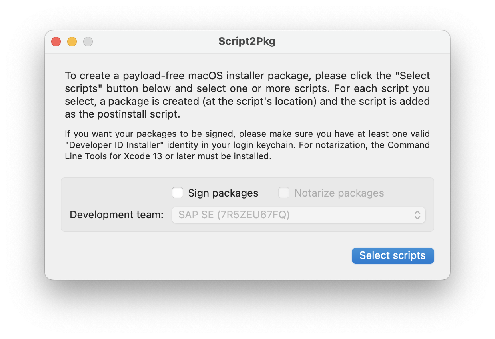

Script2Pkg
Script2Pkg
Script2Pkg
Configuring package signing
To sign an installer package using a code signing certificate, you will need a Developer ID Installer certificate installed in a keychain on your Mac.
Apple has provided documentation on how to obtain and install Developer ID certificates: Create Developer ID certificates
If you have Xcode installed, you may use it for creating and managing code signing certificates. Apple has provided documentation on how to obtain and install Developer ID certificates using Xcode: Manage signing certificates
Once the Developer ID Installer certificate is installed in a keychain on your Mac, it should be listed next to Development team: in the main app window.

Reverting to Default Settings
To change back to the default setting, remove the Developer ID Installer certificate from the keychain on your Mac.